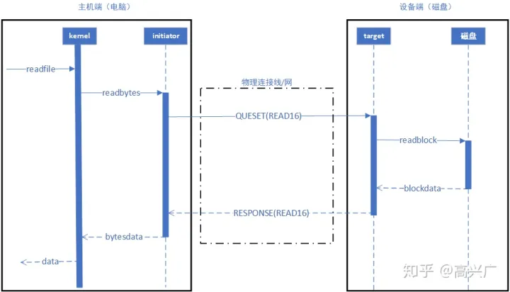
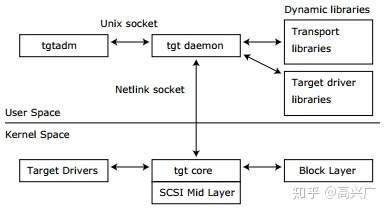
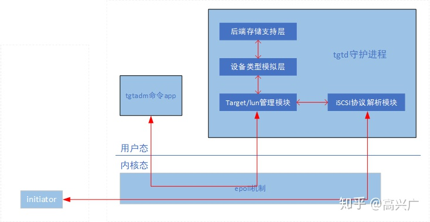
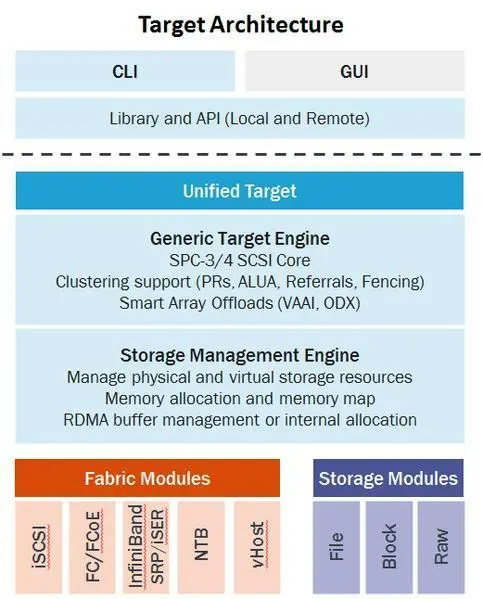

- 都属于存储协议的一种。
FC 协议
- FC: Fibre Channel 网状通道；Fibre/Fiber都有纤维之意，与光纤无关
- 已经被大多数人误解为Fiber Channel光纤通道。
- 提示：由于Fiebre（纤维、网络）和Fiber（光线）只有一字之差，所以产生了很多流传的误解。FC只代表Fibre Channel，而不是Fiber Channel，后者被翻译为“光纤通道”，甚至接口为FC的磁盘也被称为“光纤磁盘”，其实这些都是很滑稽的误解。再加上FC协议普遍都用光纤作为传输线缆而不用铜线，所以人们下意识的称FC为光纤通道协议而不是网状通道协议。但是要理解，FC其实是一套网络协议的称呼，FC协议和光纤根本没有必然地联系，Fibre Channel可以称其为FC协议，或者FC网络、FC互联。同样“FC交换机就是插光纤的以太网交换机”和“以太网就是双绞线，以太网就是水晶头”这些说法都是错误的
- FC只是适用于SAN（存储区域网络）中的一种传输协议；可以将其看作SAN中的TCP/IP
ISCSI
- iSCSI 是一种在TCP/IP上进行数据传输的标准。iSCSI可以实现在IP网络上运行SCSI协议，使其能够在诸如高速千兆以太网上进行快速的数据存取备份操作。
- 用于本机的SCSI协义透过TCP/IP网络发送就是iSCSI协议。
ISCSI Target
- iscsi target是位于互联网上服务器上的存储资源。
- 可以用来执行各种存储相关的工作，比如为微软Hyper-V提供共享存储等。
- 被访问的设备称为target, 而访问target称为initiator
- 把存储资源接入网络，在网络上用SCSI协议传输数据，通过一定的机制，使得Target接入网络后能被Initiator发现，Initiator通过网络直接连Target读写数据。
SCSI
- SCSI: SCSI是用于计算机主机与外围设备之间连接的一套软硬件标准。同时它可以支持很多中设备类型，但主要是用于存储设备（磁盘、磁带）。
- SCSI协议使用的是client-server模式。所有的请求由client发起，我们称之为initiator；然后由server处理这些请求，并将响应返回给client，server的角色在SCSI协议中被称之为target。
- 针对存储设备硬盘为例：
- initiator是运行在主机上的一套软件，作用是初始化和发送读写请求。target是运行在设备端（硬盘）上的一套软件，作用是处理主机对硬盘的读写请求。

- target和lun的关系
- lun的全称是logical unit number，逻辑单元号。
- 以iSCSI磁盘存储为例：一个target就是一块磁盘，而一个lun就是在这个磁盘里划分的一个分区。磁盘划分分区后方便对存储空间的管理和使用，也更有利于数据存储安全。现代操作系统的文件系统必须建立在分区即lun上。
target实现方式
TGT方式
TGT是什么？
- TGT是一套专门为简化SCSI target驱动的创建和维护而开发的开源软件。

- TGT是一套专门为简化SCSI target驱动的创建和维护而开发的开源软件。
分为内核空间和用户空间两部分。Target Drivers的主要职责是关于target与Initiator之间的传输连接，并将命令传送给tgt core模块。tgt core是Target Drivers与用户空间守护进程之间一个简单的连接器。tgt daemon是整个系统的核心，负责维护SCSI状态机并执行SCSI命令。tgtadm是一个简单的管理程序。Transport libraries是用户空间的传输层驱动，目前主要是对iSCSI协议的支持。Target driver libraries是用户层的target驱动库。
其中内核空间部分 曾 短暂进入过linux内核主线，现在是被LinuxIO项目代替。后面我们默认只讲用户空间的部分。
TGT可以使linux系统方便的对外提供SCSI服务。安装了TGT的linux机器可以方便的提供磁盘、磁带、打印机、DVD等服务，又因其支持iSCSI协议，用户可以通过网络访问我们提供的服务。
TGT程序框架

LIO方式
Linux-IO Target在Linux内核中（linux 2.6.38后），用软件实现各种SCSI Target
- 
Ceph中实现iscsi 方式有两种，一种是通过Linux target framework(tgt)实现，一种是通过Linux-IO Target（lio）实现，本文是使用的方式是LIO，LIO现在也是官方推荐的方式。
LIO的实现方式主要是利用TCMU与Ceph的librbd库进行交互，并将RBD images映射给iSCSI客户端，所以需要有TCMU软件包安装在系统中。
比较
- 传输层看，光纤通道的传输采用其FC协议，iSCSI采用TCP/IP协议。
转载请注明来源，欢迎对文章中的引用来源进行考证，欢迎指出任何有错误或不够清晰的表达。可以在下面评论区评论，也可以邮件至 1065016533@qq.com